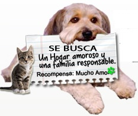

Adopción
 No compres una mascota, mejor adopta a una que lo necesite. En nuestra página web puedes conocer perritos y gatitos que están buscando hogar, o bien puedes asistir a nuestras Jornadas de Adopción! Adoptando una mascota con responsabilidad , amor , compromiso y dedicación , vas a encontrar al ser más amoroso y tierno de tú familia. Te invitamos a que nos visites en nuestro centro de adopción, situado en la avenida siempre viva... , donde hay unos perritos y gaticos preciosos esperando encontrar un hogar amoroso como el tuyo que los adopte. Si buscas adoptar: